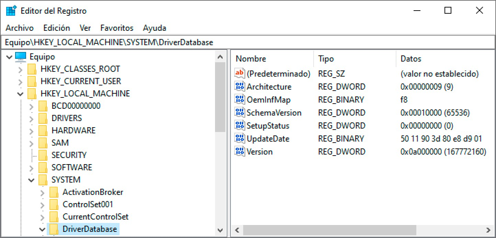

Persistencia de malware en Windows
Hasta ahora el curso ha tratado el análisis de una muestra como un proceso más o menos puntual: se examina un fichero o se observa una ejecución. Este bloque cambia de perspectiva y pregunta qué hace el malware una vez dentro del sistema para seguir ahí —sobrevivir a un reinicio, a un cierre de sesión o a que el usuario cierre el proceso— y cómo puede ejecutarse dentro de otros procesos sin ser detectado. Este primer módulo se centra en la persistencia: los mecanismos que un atacante utiliza para garantizar que su código vuelva a ejecutarse automáticamente, apoyados casi siempre en el registro de Windows.
1 El Registro de Windows
El Registro de Windows es una base de datos jerárquica y centralizada que almacena los ajustes de configuración del sistema operativo y de las aplicaciones. Nace para sustituir a los antiguos ficheros .ini y dar una respuesta centralizada a la necesidad de guardar datos de configuración.
Internamente, el registro se almacena en disco en una serie de ficheros que se cargan durante el arranque del sistema y se mapean en memoria, formando la estructura en árbol que conocemos como Registro de Windows. Por tanto, el registro es esencialmente una representación en memoria de esos archivos, si bien algunas de las claves presentes en él pueden ser volátiles: se almacenan únicamente en memoria y no se conservan en disco.
Muchas variantes de malware hacen uso del registro de Windows, ya sea simplemente para almacenar su propia información de configuración, o bien —el uso que interesa en este módulo— como mecanismo de persistencia.

Ruta
La dirección completa dentro del árbol del registro, desde la clave predefinida hasta la subclave concreta (por ejemplo, HKEY_LOCAL_MACHINE\SYSTEM\DriverDatabase).
Clave predefinida
Cada una de las cinco raíces del árbol del registro (HKCR, HKCU, HKCC, HKLM, HKU).
Clave / Subclave
Un "directorio" dentro del árbol del registro; una subclave es, simplemente, una clave anidada dentro de otra.
Valor
El nombre de un dato concreto almacenado dentro de una clave (por ejemplo, "Version").
Tipo
El formato del dato almacenado: cadena de texto (REG_SZ), número (REG_DWORD), binario (REG_BINARY), etc.
Dato
El contenido real almacenado en ese valor, interpretado según su tipo.
| Clave predefinida | Abreviatura | Descripción |
|---|---|---|
| HKEY_CLASSES_ROOT | HKCR | Almacena los ficheros registrados, sus extensiones y los programas asociados. |
| HKEY_CURRENT_USER | HKCU | Almacena la configuración de la cuenta de usuario que ha iniciado sesión. |
| HKEY_CURRENT_CONFIG | HKCC | Almacena información acerca de la configuración actual del equipo. |
| HKEY_LOCAL_MACHINE | HKLM | Almacena la configuración del equipo, información de software y dispositivos conectados al equipo. |
| HKEY_USERS | HKU | Almacena la configuración de todos los usuarios. |
2 Auto-start Extensibility Points (ASEPs)
Un Auto-start Extensibility Point (ASEP) es un mecanismo que permite que un programa se ejecute automáticamente en el sistema, sin interacción explícita del usuario. Los ASEPs de Windows son precisamente los que el malware utiliza para obtener persistencia y, según sus características, se agrupan en cuatro grandes categorías:
1. Mecanismos de persistencia del sistema
Puntos de extensibilidad diseñados explícitamente por Windows para iniciar programas: claves Run, carpetas de inicio, tareas programadas y servicios.
2. Abuso del cargador de programas
El atacante interviene en cómo el sistema localiza y carga binarios, DLLs o correcciones de compatibilidad ya existentes: IFEO, secuestro de extensiones, accesos directos, COM y bases de datos shim.
3. Abuso de aplicaciones
Se aprovechan las capacidades de extensión (complementos, extensiones, plugins) de programas legítimos ya instalados.
4. Abuso del comportamiento del sistema
Se aprovechan características internas de Windows —cómo arranca sesión, cómo resuelve DLLs— para iniciar programas: Winlogon, secuestro de DLL, AppInit DLL y Active Setup.
Las siguientes cuatro secciones desarrollan cada una de estas categorías en detalle.
3 Mecanismos de persistencia del sistema
Esta primera categoría reúne los puntos de extensibilidad que Windows ofrece de forma explícita y documentada para iniciar programas automáticamente: no son un efecto secundario ni una característica reutilizada con otro fin, sino la forma "oficial" de conseguir que algo arranque solo, y por eso son también el mecanismo de persistencia más común y más buscado por cualquier analista.
Claves Run
Las claves Run, RunOnce y RunOnceEx contienen una lista de programas que Windows ejecuta al iniciar sesión. RunOnce/RunOnceEx eliminan la entrada tras ejecutarla una vez; Run la mantiene en cada inicio de sesión. Existen tanto en HKCU (se ejecuta solo para ese usuario, sin privilegios de administrador) como en HKLM (se ejecuta para cualquier usuario que inicie sesión, y requiere privilegios de administrador para escribirse), bajo la ruta SOFTWARE\Microsoft\Windows\CurrentVersion\.
Carpetas de inicio (Startup)
Windows ejecuta automáticamente cualquier programa o acceso directo colocado en una carpeta de inicio. La carpeta de usuario está bajo %AppData% y solo requiere privilegios de usuario; la carpeta común, bajo %AllUsersProfile%, afecta a todos los usuarios y requiere privilegios de administrador para escribir en ella.
Tareas programadas
Una tarea programada se ejecuta según uno o varios desencadenadores (triggers): una hora concreta, el inicio de sesión, un evento del sistema, etc. Cada tarea se define en un fichero XML almacenado en %SystemRoot%\System32\Tasks, lo que permite al malware crear su propia tarea programada como mecanismo de persistencia flexible y silencioso.
Servicios
Un servicio de Windows se ejecuta en segundo plano, generalmente sin interfaz gráfica visible para el usuario. Registrar un nuevo servicio requiere privilegios de administrador, y su información de configuración (ejecutable asociado, tipo de arranque) se almacena, cómo no, en el registro.
4 Abuso del cargador de programas
Esta segunda categoría de ASEPs no crea un nuevo punto de arranque, sino que interviene en mecanismos que Windows ya usa para cargar y ejecutar programas —depuración, asociación de extensiones, compatibilidad de aplicaciones— y los tuerce para que, en el proceso, también se ejecute código malicioso.
4.1 Image File Execution Options (IFEO)
IFEO es una característica de Windows pensada originalmente para depuración: permite asociar un depurador a un ejecutable concreto, de modo que cada vez que ese ejecutable se lanza, Windows arranca en su lugar el depurador configurado (pasándole el ejecutable original como argumento). La configuración vive en:
HKLM\SOFTWARE\Microsoft\Windows NT\CurrentVersion\Image File Execution Options
Un atacante puede abusar de esta característica configurando su propio malware como "depurador" de un programa legítimo (por ejemplo, del propio explorador de Windows) mediante el valor Debugger: cada vez que la víctima intenta abrir ese programa, Windows ejecuta el malware en su lugar.
4.2 Secuestro de extensiones
Windows asocia cada extensión de fichero con la aplicación que debe abrirlo a través de las claves bajo SOFTWARE\Classes. El secuestro de extensiones consiste en modificar esa asociación para que, al abrir un tipo de fichero determinado, se ejecute el programa malicioso en lugar de (o además de) la aplicación legítima. Igual que en casos anteriores, hacerlo en HKCU solo afecta al usuario actual, mientras que hacerlo en HKLM afecta a todo el sistema y requiere privilegios de administrador.
4.3 Manipulación de accesos directos
Consiste en modificar los accesos directos que el usuario ya tiene en el sistema (en el Escritorio o en la barra de tareas), editando la aplicación de destino para añadir el programa malicioso. Para ello se pueden concatenar el programa legítimo y el malicioso utilizando el carácter ;, de modo que Windows interprete el comando y ejecute ambos programas. Al actuar en el ámbito del usuario, este ASEP no requiere privilegios de administrador: el programa malicioso se ejecuta con los privilegios del propio usuario.
4.4 Secuestro de COM
El Component Object Model (COM) de Microsoft es un subsistema que permite a un desarrollador crear componentes de software (como DLLs) reutilizables por otros programas. Cada objeto COM tiene un identificador único, el CLSID, almacenado en el registro junto con la ruta de la DLL que lo implementa. El secuestro de COM consiste en modificar esa ruta para que apunte a una DLL maliciosa: cuando cualquier programa interactúa con el objeto COM secuestrado, la DLL maliciosa se carga en su espacio de direcciones.
| Clave | Ruta | Privilegios necesarios |
|---|---|---|
| HKCU | SOFTWARE\Classes\CLSID | User |
| HKLM | SOFTWARE\Classes\CLSID | Admin |
4.5 Bases de datos Shim
La Microsoft Windows Application Compatibility Infrastructure/Framework (Application Shim) es una funcionalidad que permite que programas creados para versiones anteriores del sistema operativo (como Windows XP) sigan funcionando en versiones más actuales (como Windows 10), aplicando correcciones de compatibilidad —shims— sin tener que reescribir el código del programa.
Cuando se aplica un shim a un programa y este se ejecuta, el motor shim redirige la llamada API realizada por el programa corregido hacia el código shim: en la práctica, reemplaza el puntero correspondiente en la Import Address Table (IAT, ver módulo 15) con la dirección del código shim.
Un atacante puede abusar de estas correcciones para lograr persistencia, siguiendo un flujo de trabajo típico:
- Se crea una base de datos de compatibilidad de aplicaciones (base de datos shim) para la aplicación de destino: cualquier aplicación legítima de terceros que la víctima utilice con frecuencia.
- Se instala la base de datos shim (un fichero .sdb) en el sistema de la víctima, típicamente ubicándola en C:\Windows\AppPatch y creando una serie de claves en HKLM\SOFTWARE\Microsoft\Windows NT\CurrentVersion\AppCompatFlags\.
- Cuando la víctima ejecuta la aplicación de destino, se aplica la corrección shim y se ejecuta el código malicioso.
| Shim | Descripción |
|---|---|
| RedirectEXE | Redirecciona la ejecución. |
| InjectDll | Inyecta una DLL en una aplicación. |
| DisableNXShowUI | Desactiva la prevención de ejecución de datos (DEP). |
| CorrectFilePaths | Redirige rutas del sistema de archivos. |
| VirtualRegistry | Registra una redirección. |
| RelaunchElevated | Inicia una aplicación con privilegios elevados. |
| TerminateExe | Finaliza un ejecutable al iniciarse. |
| DisableWindowsDefender | Desactiva el servicio Windows Defender para una aplicación. |
| RunAsAdmin | Marca la aplicación para ejecutarse con privilegios de administrador. |
5 Abuso de aplicaciones
Algunos programas legítimos tienen la capacidad de extender su funcionalidad gracias a complementos, extensiones o plugins. Los ASEPs de esta categoría aprovechan precisamente esa capacidad de extensión de aplicaciones legítimas —no del propio sistema operativo— para persistir.
Binarios del sistema troyanizados
Consiste en modificar un programa legítimo del sistema para que cargue código malicioso. Un objetivo común son las DLLs del sistema, ya que se cargan en el espacio de memoria del proceso: el ataque inyecta nuevo código ensamblador en una zona vacía de la DLL y cambia su punto de entrada para que apunte a ese código. El código malicioso guarda el estado de los registros, ejecuta el programa malicioso y restaura los registros para continuar con la ejecución normal de la DLL. Modificar archivos del sistema requiere permisos de administrador, y el binario troyanizado hereda los privilegios del programa que lo carga.
Complementos de Microsoft Office
Permiten ampliar las funciones de las aplicaciones de Office e interactuar con el contenido de sus documentos. Desde Office 2013 se ejecutan en un entorno limitado dentro de un navegador; las implementaciones anteriores (Visual Basic, Visual Studio, COM) implican código binario que se ejecuta directamente sobre el sistema del usuario, normalmente como una DLL en %ProgramFiles%\Microsoft Office\[OficeVersion]\Addins\[ProgID], con una subclave asociada en HKCU\Software\Microsoft\Office\[OfficeApp]\Addins\[ProgID].
Browser Helper Objects (BHO)
Ficheros DLL que funcionan como complementos para Internet Explorer (hasta la versión 11). Un BHO debe registrarse como servidor COM configurando su CLSID en HKLM\SOFTWARE\Windows\CurrentVersion\Explorer\Browser Helper Objects. Al iniciarse Internet Explorer se cargan todos los BHO registrados, que a partir de ahí pueden interactuar libremente con el navegador. Escribir en HKLM requiere privilegios de administrador, pero el BHO se ejecuta con los privilegios del usuario que inició Internet Explorer.
6 Abuso del comportamiento del sistema
La última categoría de ASEPs aprovecha características internas del propio Windows —cómo arranca una sesión de usuario, cómo se resuelven las DLLs, cómo se instalan ciertos componentes— para iniciar programas, sin depender de una clave de arranque explícita ni de una aplicación de terceros.
Winlogon
Winlogon es el último proceso en leer los hives del disco al cargar la configuración específica del usuario, y se puede configurar para iniciar ciertos programas cada vez que un usuario inicia sesión, mediante la clave HKLM\SOFTWARE\Microsoft\Windows NT\CurrentVersion\Winlogon. También es posible implementar una DLL como paquete de notificación de Winlogon para recibir sus eventos directamente. El programa que Winlogon inicia normalmente es userinit.exe (valor Userinit); otro valor, Shell, apunta por defecto al escritorio y al administrador de archivos (explorer.exe).
Secuestro de DLL
Windows resuelve la carga de una DLL siguiendo, de forma predeterminada, un orden de búsqueda de carpetas. El secuestro de DLL consiste en ubicar una DLL maliciosa con el mismo nombre en cualquiera de esas carpetas, de modo que el sistema la cargue en lugar de la DLL legítima.
- Directorio desde el que se cargó la aplicación.
- Directorio del sistema (normalmente, C:\Windows\System32).
- Directorio del sistema de 16 bits (normalmente, C:\Windows\System).
- Directorio de Windows (la variable de entorno %WinDir%).
- Directorio de trabajo actual.
- Directorios definidos en la variable de entorno PATH.
AppInit DLL
Característica de Windows que permite cargar una DLL en el espacio de direcciones de cualquier aplicación con interfaz de usuario (es decir, cualquiera que cargue user32.dll). Una DLL maliciosa puede abusar de esta característica para garantizar que se cargue con cada aplicación interactiva, mediante la clave HKLM\SOFTWARE\Microsoft\Windows NT\CurrentVersion\Windows\AppInit_DLLs y el valor LoadAppInit_DLLs. Está deshabilitada desde Windows 8 en adelante si el arranque seguro está activado.
Active Setup
Característica de Windows que permite iniciar programas cuando un usuario inicia sesión en el sistema, configurable a nivel de equipo (HKLM) o por usuario (HKCU) bajo SOFTWARE\Microsoft\Active Setup\Installed Components. Para habilitarla se crea una nueva clave con dos valores de tipo cadena: Version y StubPath, este último con el programa que se ejecutará.